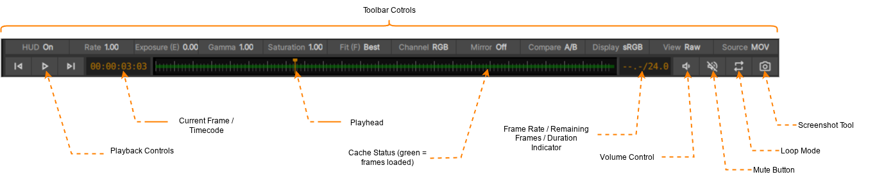
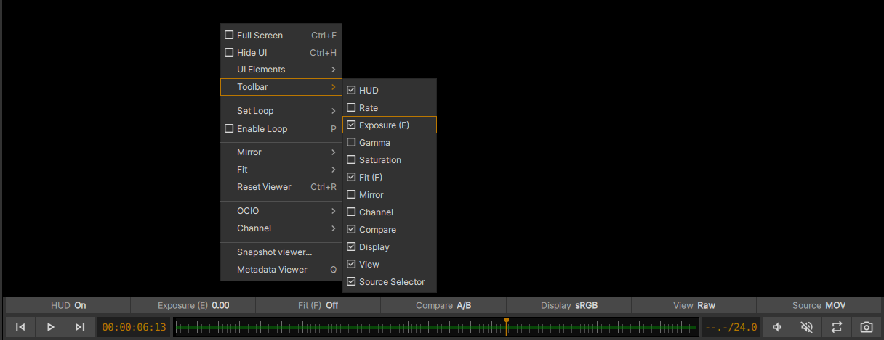

Transport Controls and Toolbar
{kind=link}

Toolbar とトランスポートコントロール。すべてのツールバーボタンが Viewport コンテキストメニュー
(Viewport 内でマウスを右クリック) を介してアクティブ化されていることに注意してください。
Toolbar とトランスポートコントロールは、Viewer のすぐ下にあります。Toolbar には、ビューアの外観や挙動を変更するためのコントロールが用意されています :
Transport Controls
xSTUDIO のトランスポートコントロールを使用すると、再生の開始/停止や、Sequence 内のメディア項目のジャンプ（移動）を行えます。各ボタンの機能はユーザーにとって概ね馴染みのあるものですが、以下の点に注意してください :
タイムコード/現在のフレーム表示をクリックすると、表示を変更するオプションが表示されます。
「Frames from timecode」を選択すると、タイムコードが絶対タイムコードフレームとして表示されます。例えば、24fps のメディア項目のタイムコードが 00:00:10:10 の場合、絶対フレームは 254 と表示されます。
タイムラインバー内をクリックしてスクラブすることで、現在のフレームを設定できます。
スナップショットツールを使用すると、現在のフレームを静止画 (画面上のアノテーションを含む) として書き出すことができます。
タイムバー領域において、緑色のブロックはデコードが完了し、再生用にキャッシュに保存されているフレームを示します。画像キャッシュのサイズを調整するには、xSTUDIO preferences を参照してください。
フレームが利用できない場合 (例えば、長さの異なる 2 つのメディア項目を A/B 比較しており、長さが短い方の項目を表示している場合など)、タイムラインにオレンジ色のバーが表示されます。
xSTUDIO Toolbar
xSTUDIO の Toolbar には、メディアの再生や表示に関するさまざまな設定を操作できるボタンが多数用意されています。Toolbar の各ボタンは、ユーザー設定によって表示/非表示を切り替えることができるため、必要に応じて必要なボタンのみを配置することが可能です。また、必要であれば Toolbar 自体を完全に非表示にすることもできます。Toolbar ボタンで制御される一部のステータスは、xSTUDIO のホットキー経由でも調整できます。Toolbar の各要素の概要は以下の通りです :
Configuring the xSTUDIO Toolbar
Viewport の More/Context メニュー (Viewport 内で右クリックするか、Viewport パネルの右上にある More ボタンをクリックします) から Toolbar サブメニューにアクセスし、Toolbar 項目のアクティブ/非アクティブを切り替えることで、ご自身の Toolbar をすっきりと整理したり、機能を充実させたりすることができます。

The buttons in the toolbar can be toggled to hidden state to optimise your interface.